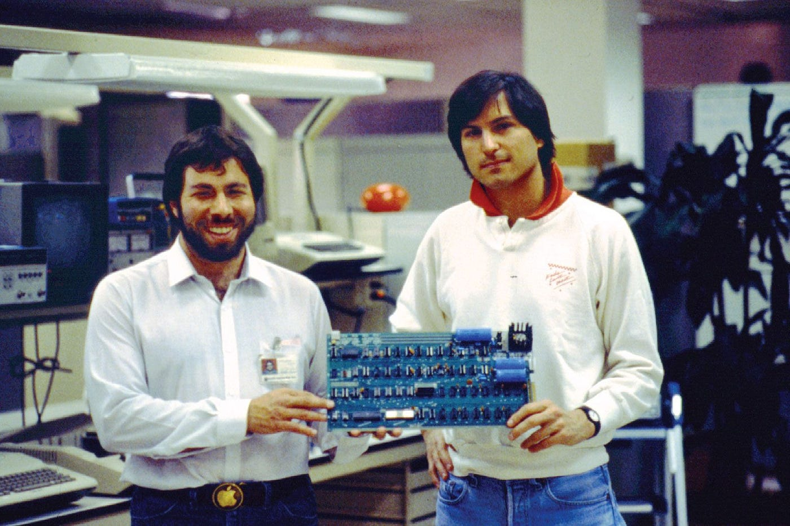

Jun 17
The First Friday TECHsays Essay
Was the First Famous handshake of the two steve on a Friday ?

The Fridays essays, called Friday TECHsays, are essays about work and technology from a humble and passionate person actually in Africa, exactly in Dakar but connected to the world through the internet. As an example of this connectedness I could for example says out loud that this series of essay has been inspired by Alex Wilhelm Journalist and Editor In Chief @TechCrunchPlus Co-host of the podcast @EquityPod whom I’ve heard telling a story about his series of essays called the Thursday's essays. This when listening on June 16, 20022 at 00:40 (GMT) an episode of equitypod titled We’re entering an era of, um, creative accounting in startups. Recall that equity pod is a podcast about everything in tech, a podcast I love listening like akimbo, sway, recode, The prof G Pod, … Yes I am a listener of many podcast. yes, I spend a lot of time listening to these insightful skilled professionals, journalists or podcasters because they are insightful to me and I hope that their insights will help these Friday's essays become more insightful to you reader but about what these Friday’s essays that I named Fridays TECHsays will be about.
The Friday TECHsays will be an essay published every Friday for exploring the ending of the week and foreseeing the perspective for the next ones always with the core topic being about the tech industry and its trending round of news about people, ideas, products, services, funding, and concerns but it could also be a digression in a topic that explore the past like this one that you will read.
These essays will be mostly about thoughts about work and entrepreneurship in the tech industry. I hope that these essays will be useful for tech workers or/and entrepreneurs like you. As I am writing this I got this recall that reminded me of how tech workers are ambitious people because of their knowledge of the disruptive power of technology for changing one’s life both socially, professionally, and financially. With the words that I will be assembling to form sentences, then paragraphs and then a Friday's Essay, what I am seeking is to encourage you and to inspire you but as I can’t please everybody I am first focusing on people working and running projects and companies into the tech industry and if possible all workers and entrepreneurs of any industry of any corner of the world.
I am willing to religiously post every Friday an essay and I am actually Thursday, June 16, 2022, at 01:26 typing these words already written on this white paper in front of me. Then if I am committed enough and already engaged in this journey then this first one should be published on Friday, June 17, 2022. I am actually typing it even if it’s not finished on this paper and I could take this as a good signal that may show that Friday you will read the first Friday Essay if you want.
While trying to engage my own self in this journey of writing an essay every Friday with the paragraph above I got the idea to write about this effect of Friday on the technology industry and certainly on other industries as well. This effect of Friday is this power of discourses and meetings happening between tech workers and entrepreneurs on Friday after work inside bars, restaurants, and other public spaces designed to facilitate extra fun moments of connections …
This Friday effect has brought yo us many innovations because groups of people spent some time connecting and talking about tech business ideas some of those ideas became trending useful technology that participated in the growth of the whole world economy, not the silicon valley its host American economy only. These discussions and meetings on Friday shaped our culture and our way of living with products and services of any kind all being based on technology peculiarly on the power of computers and networks most of which are results of side projects born from Friday after work hours connections between men and women.
Now millions and billions of people around the world are using these tech-enabled products and services consumed using a range of devices from personal computer to smartphone without discounting these laptops and tablets as well as these console games most of which has handheld versions and games making not only kid passionate about Friday after class but also adult professionals like Alex Wilhelm who on Friday after work and after a couple of drinks with friends and close team partners rushed home to get to his game console for playing who knows dooms or may be Fortnite. What I’m reporting dates back years and years ago, I am not sure that Fortnite was already published for Alex to play it on Friday after work hours and after happy Friday after work hours connection time but given what I’ve heard from his own voice during equity podcast Alex is still a game player and this Thursday, June 16, 2022, I am betting that on this Frida, June 17, 2022, the publishing day of the TECHsays and days after while you are reading this Friday TECHsays, Alex will still be a game player because most of the products and services of tech are almost age-independent meaning they are almost always built for people of any age to be able to engage with them and use them.
these subsequent paragraphs tried to convince you about the power of meetings on Friday after work hours and the impact of the connections those meetings have ignited on our everyday lives and our world economy but I have not still provided you with a concrete example of such Friday meetings but while writing them, the first instance of example I thought of was Steve Jobs and Steve Wozniak meeting because if I‘m right in my assumption which I should fact check the two steve met during a Friday like how Jobs and Gates met in public on May 30, 2007, but on Wednesday thanks to the initiative of a team led by two tech journalists, Kara swisher and during the D5 conference an event organized by these two for igniting discussions among tech business leaders, discussions from which we could still gather insight today. To say that great ideas can be burred into past things what was the spirit of this article I entitled past technologies can be new that I have published some months ago here in my medium blog.
But let's get to the fact-checking of this meeting of steve jobs and steve Wozniak that I was assuming to happen during a Friday for this to be the first instance of a worthful connection that happened on a Friday.
My first tentative to check this seems unfruitful because it is very likely that the two steve met first during The Homebrew Computer Club, which first convened on this day, Mar. 5, in 1975 says this article from time and this past week day was a Wednesday but when I was doing my assumption I was thinking about this man who was reporting in this documentary about Apple that he is the one who connected the two steve and this was in front of steve Wozniak home garage. I am remembering the scene of this man leading journalists to the place where he connected them. I am then looking back at this video archive and see if I could bring here this piece of information.
business insider is reporting about a man called Fernandez as being the man who connected Wozniak and jobs because he knew them separately. Is he the man I saw talking in this documentary? I am not sure but the scene described by business insider in this article is almost the same that was illustrated in this documentary with the person confessing and showing where he presented jobs to Wozniak who lived the corner where he used to walk with steve jobs who is said to like taking long walk time talking with others even when he became the successful and creative tech CEO of Apple. Then I am actually more open to this story with Fernandez being the first meeting of the two steve rather than this story of this meeting happening during The Homebrew Computer Club. For this instance, I am giving more credits to business insider than time.com . but I am still left without an answer about this meeting happening on a Friday which is what I am trying to figure out with you for the goal of showing you an example of an important meeting of two or more people wich happened on a Friday after work hours and which led to an important impact on our world economy and culture.
A second round of search trying to discover the day of the week of on which steve jobs and steve wozniak met led me to this Wikipedia article that says that the two steve met because steve jobs worked for the summer for HP where steve wozniak was working too and that Wozniak was introduced to Jobs by Fernandez, who attended Homestead High School with Jobs in 1971. The name of Fernandez is still there then it is very likely that he is the one who connected the two steve like how Enerst solvay connected scientists from several field and country into what ended being called the conference of solvay with an impact that we all know how big it has shaped our world and the progress we have made in science. I had for that purpose written an article about that entitled The filtering effect of AI and this titled a peculiar scientific link to study. These two articles could show you that I am interested in knowing how people connect and what’s the impact of such connects on our society because I believe that the most important piece of ideas, products or services be them about tech or not are those that help people connect and that’s what I have been stating in this short form article entitled connection engine businesses. That’s what I am trying to do with this friday Essay but I have assumed that that this connections that I am exploring with you happened on a friday for its impact I have no doubt that you know much about it because we all know how Apple shaped our culture first with the personal computer revolution and then the advent of smartphone with this mythic brand of smartphone called Iphone and I am not gone with my matter with friday because the iPhone was firs unveiled on Thursday Jan. 9, 2007 at the MacWorld Expo, not Friday.
Will I be able to find the day of week on wich jobs and wozniak connected and will it be a friday for my example to be good example of a big impactful connection that happened a Friday?
Imy quest of knowing if Jobs and Wozniak first handshake was a friday I landed on this article entitled Famous Handshakes In History:
How Jobs And Wozniak Met published by @EmoFlore . Famous is for sure this meeting that I am trying to identify the day of the when it happened, an illustration of its famousness is that there are more 604 result of articles in medium about steve jobs and steve wozniak. This google advanced search could give you a glance of the level of coverage of this topic in medium but to stay aligned with this tweet that I’ve published days ago when I was not planning to publish an essay every friday I should provide you link for at least bing also and it’s here.
that’s a bit more fair even if the topic is mostly about Apple not Google Nor Microsoft but given how the tweet is outputted you could see that google is getting more exposure. Again that’s not the point of this friday essay but I could say that I have made the effort of being treating them equitably. By the way this still doesn’t provide an answer to my simple interogation. Was Steve Jobs and Steve Wozniak first handshake on a friday?
If up until there you have the answer please help me in my quest even if you could tell that I was better starting asking you that first right in the first paragraph instead of writing all these words and asking it now. I am looking for the answer since yesterday thursday june 16,2022 and I am actually Friday June 17, 2022 at 09:26 PM (GMT) still left without answer while this article should be post this Friday for it to really become a Friday TECHsays then I have 2 hours 34 minutes left for finding the answer of what is just about to be an example of an assumption I have made of the impact of connections and meeting happening on friday on our society and world and mostly on the tech industry. Then whatever will be the ending of this quest, if I am about to keep my engagement and promises intact I should hit publish before 00:00 like how Satya Nadella, CEO of Microsoft is hitting refresh with Microsoft.
I am not sure if this is a simple question but on could already see that given the many tools like search engines that are in our disposals it can still be difficult to find a precise answer to a question. I have not just relied on search engines and on you for finding this answer I also relied on Twitter to see if someone could helps us know if the two steve met on Friday.
still in this quest of discovering if Jobs and Wozniak meton a friday I thought about getting sense of the number of people that they met on friday. For that I relied on the advanced search used in the paragraph above for discovering tweets that mentions a meeting on friday. Google found 809 references of tweets with the keyword “we met on friday” while bing one reference of a tweet with this same keyword the tweet referenced by bing is there
and here are two example from the google advanced search results but you could already see that meeting on friday is something common and I event asking myself couples of other questions which are how many couples have been formed by a first meeting on a friday? and how many people are born from such couples?
For example, With the tweet below Courtney is reporting about his first date with her now girlfriend a date which was a friday and I hope that like me you have guessed the sexual orientation of this profile I picked randomly. I am personally not a Gay and I am promoting gay prideness nor I am fighting them because it’s their choice of living not mine. I hope also that my opinion and position about this issue doesn't hurt you. I am better coming back to my goal of finding the right answer to my question that is : was steve jobs and steve wozniak first meeting on a friday?
it’s now 10:50 PM (GMT) I have just one hour and few minute for answering the question positively for Steve Jobs and Steve Wozniak meeting to be my first example of an impactful connection that happened on Friday. I should be honest by telling you that I am almost sure that I will not answer this question and provide and example of what I have stated about the impactfulness of friday’s connections but I hope that you have seen that I made the effort to search for it and to report my process because when one tell you something he or she should provide you with a clear example a manifestation of this thing. That’s what insightful persons do but sometimes we fail at this. Accepting a failure for getting things done is better than forcing success until missing deadline. Publishing this first Fridays Essays is for me more important than coming up with a perfect example. I have exactly one hour left for finding the answer but I can’t be too long and I passing you the ball for you to search and see if Steve Jobs and Steve Wozniak first met on a Friday.
I hope you got the idea behind Fridays TECHsays and that you wish me that I keep my promise of posting one every Friday and I will do my best for this to happen as how I published daily a blog article here on medium. This daily publishing experience led to these 700 articles this one is the 701st.
Thank you for reading this Friday TECHsays Essay, See you next Friday or in between.